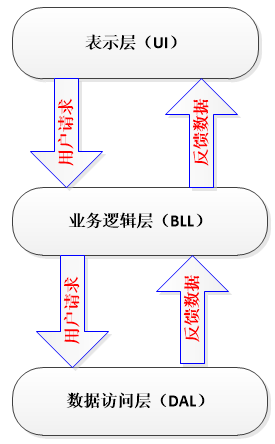
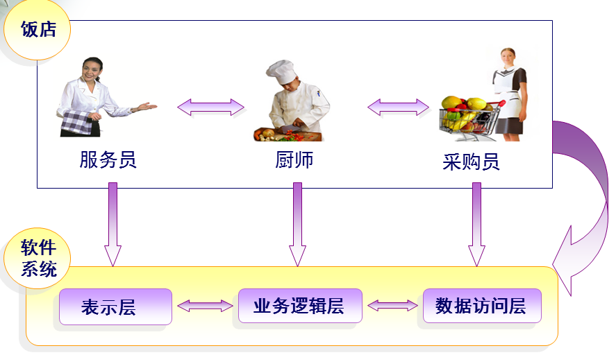
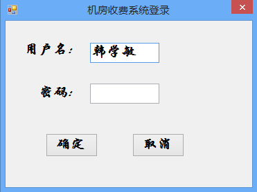
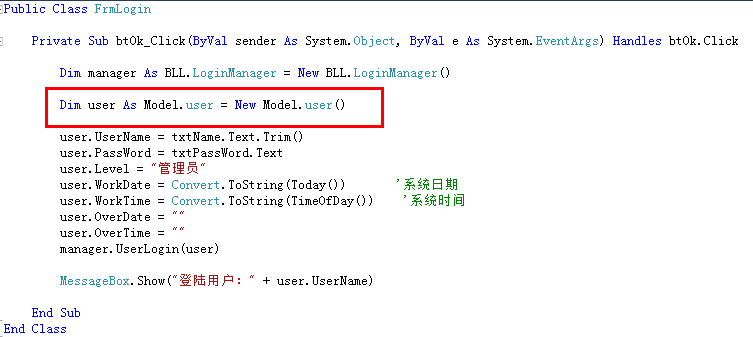
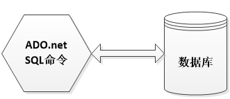
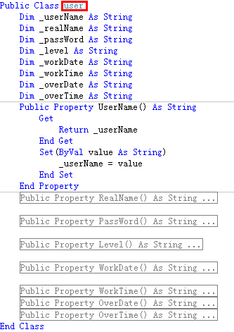
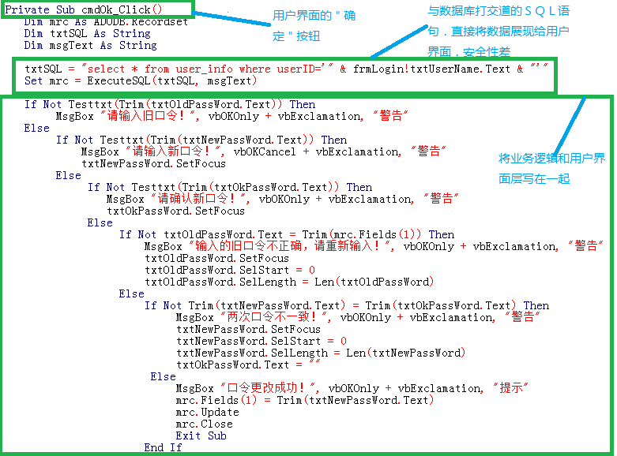

I have always wanted to write a relatively complete and perfect summary. But after thinking it over, I didn't know where to start. As they say, everything is hard at the beginning. Today I sorted out my messy thoughts. Well, I still didn't sort them out well. I'll just talk about whatever comes to mind.
Beginners really don't understand:
- 1. What is three-tier?
- 2. Why use three-tier?
- 3. What is the difference between three-tier and the previously used two-tier? Where are its advantages?
- 4. How to learn three-tier well? How to apply three-tier? ……
In this blog post, I will explain them one by one. I only know a little about it, so please forgive me!!!
Teacher Mi always emphasizes: combine learning with life, connect learning with life. Only then can learning be called truly learning, and life truly living.
As for three-tier, I thought hard about how to connect it with real life. Well, last night I suddenly had an "inspiration." Do you still remember the story in Big Talk Design Patterns about Big Bird and Xiao Cai eating lamb skewers—a Command Pattern triggered by eating at a street stall versus eating at a restaurant (of course, today we are not studying the Command Pattern). The waiter, the chef, and the purchaser.
Isn't this a typical three-tier architecture??? (⊙ o ⊙) Ah! Haha (I will explain this later)

First, let's understand:
1. What is three-tier?
UI (Presentation Layer):Mainly refers to the interface that interacts with the user. It is used to receive data input by the user and display the processed data the user needs.
BLL (Business Logic Layer):The bridge between the UI layer and the DAL layer. It implements business logic. Business logic specifically includes: validation, calculation, business rules, etc.
DAL (Data Access Layer):Deals with the database. It mainly implements adding, deleting, modifying, and querying data. It submits the data stored in the database to the business layer, and at the same time saves the data processed by the business layer to the database. (Of course, these operations are all based on the UI layer. The user's needs are reflected to the interface (UI), the UI reflects them to BLL, BLL reflects them to DAL, DAL performs data operations, and then returns them one by one until the data the user needs is fed back to the user.)

Each layer has its own responsibilities, so how should the three layers be connected?
1. Unidirectional reference (see figure below)
2. At this point, the Entity layer comes in. (Note: Of course, the role of the Entity layer is more than this.)
Entity:It does not belong to any of the three layers, but it is an essential layer.
The role of Entity in the three-tier architecture:
- 1. Realize "encapsulation" in object-oriented thinking;
- 2. Run through the three layers and pass data between them; (Note: To be precise, the Entity layer runs through the three layers to connect them.)
- 3. For beginners, it can be understood this way: each data table corresponds to an entity, that is, the fields in each data table correspond to the properties in the entity. (Note: Of course, this is not actually the case. Why? 1> The entity we need may not exist in the entity corresponding to the data table; 2> We can completely put all the fields from all data tables into one entity.)
- 4. The data transfer (unidirectional) between each layer (UI—>BLL—>DAL) is passed using variables or entities as parameters. This constructs the connection among the three layers and completes the implementation of the functionality.
But for large amounts of data, using variables as parameters is somewhat complicated, because too many parameters can easily get mixed up. For example: if I want to pass employee information to the lower layer, and the information includes: employee number, name, age, gender, salary... if variables are used as parameters, then there will be many parameters in our method, and it is very likely that the parameter matching will get confused when used. At this point, if an entity is used as a parameter, it becomes very convenient. There is no need to worry about parameter matching; just take whichever property from the entity and use it directly. This is very convenient. It also improves efficiency.
（Note:Why is it said here that it can be temporarily understood that each data table corresponds to an entity? Answer: As everyone knows, the purpose of building a system is to provide services to users. Users don't care how the backend of your system works; users only care whether the software is easy to use and whether the interface suits their taste. When users easily add, delete, modify, and query on the interface, the database must also have corresponding add, delete, modify, and query operations. The specific objects of add, delete, modify, and query operations are the data in the database, which in plain terms are the fields in the tables. Therefore, treating each data table as an entity class, with the properties encapsulated by the entity class corresponding to the fields in the table, then when the entity runs through the three layers, it can implement adding, deleting, modifying, and querying data.)
In summary: the dependency relationships among the three layers and the Entity layer:

The idea comes from life:

Waiter:Only responsible for receiving guests;
Chef:Only responsible for cooking the dishes ordered by guests;
Purchaser:Only responsible for purchasing ingredients according to the guests' order requirements;
They each perform their own duties. The waiter does not need to know how the chef cooks, nor how the purchaser purchases ingredients; the chef does not need to know which guests the waiter received, nor how the purchaser purchases ingredients; similarly, the purchaser does not need to know which guests the waiter received, nor how the chef cooks.
How are the three of them connected?
For example: the chef can make: stir-fried eggplant, scrambled eggs, chow mein—at this point, three methods are built (cookEggplant(), cookEgg(), cookNoodle())
The customer deals directly with the waiter. The customer says to the waiter (UI layer): "I want a stir-fried eggplant." The waiter is not responsible for cooking the eggplant, so she passes the request up to the chef (BLL layer). The chef needs eggplant, so he passes the request up to the purchaser (DAL layer). The purchaser takes the eggplant from the warehouse and passes it back to the chef. The chef invokes the cookEggplant() method, and after making the stir-fried eggplant, passes it back to the waiter, who presents the eggplant to the customer.
This completes a full operation.
In this process, the eggplant is passed as a parameter among the three layers. If the customer orders scrambled eggs, then the egg is used as the parameter (this is using variables as parameters). If the user adds requirements, we still have to add parameters to the methods—one method adds one, and one method involves the three layers; besides, in reality it is not just one method that gets changed. Therefore, to solve this problem, we can define the eggplant, egg, and noodles as properties in the customer entity. Once the customer adds the scrambled egg requirement, we can directly take out the egg property and use it. There is no need to consider adding parameters to the methods of each layer, and even less need to worry about parameter matching.
I wonder if everyone can understand this explanation. (I'll explain with an example later.)
2. Why use three-tier?
The purpose of using a three-tier architecture: decoupling!!!
Similarly, take the restaurant example above:
(1) The waiter (UI layer) takes leave—find another waiter; the chef (BLL layer) resigns—hire another chef; the purchaser (DAL) resigns—hire another purchaser; (2) Customer feedback:
- 1. "Your restaurant has poor service attitude"—it's the waiter's problem. Fire the waiter;
- 2. "There's a bug in your dish"—it's the chef's problem. Replace the chef;
Any change in one layer will not affect the other layers!!!
3. What is the difference from two-tier?
Two-tier:

(When any part changes, the entire system needs to be redeveloped. "Multiple layers" are placed in one layer, with unclear division of labor and high coupling—making it difficult to adapt to requirement changes, with low maintainability and low scalability.)
Three-tier:

(A change in whichever layer occurs only requires modifying that layer, not the entire system. The hierarchy is clear, the division of labor is clear, and the coupling between layers is low—improving efficiency, adapting to requirement changes, with high maintainability and high scalability.)
In summary, the advantages of the three-tier architecture:
- 1. Clear structure and low coupling
- 2. High maintainability, high scalability
- 3. Facilitates synchronous development of tasks, easily adapts to requirement changes
The advantages and disadvantages of the three-tier architecture:
- 1. It reduces system performance. This is self-evident. If a layered structure is not adopted, many operations can directly access the database to obtain the corresponding data, but now they must be done through the middle layer.
- 2. Sometimes it leads to cascading modifications. This kind of modification is especially reflected in the top-down direction. If a function needs to be added in the presentation layer, to ensure that its design conforms to the layered structure, corresponding code may need to be added in both the business logic layer and the data access layer.
- 3. It increases the amount of code and increases the workload.
4. What are the concrete forms of the three tiers?

UI：

(Don't misunderstand—the UI layer is not just a bunch of user interfaces; it also needs to have code.)

(1. Function: user inputs data, feedback data to the user; 2. Everyone observe the code: no business logic involved, only direct parameter passing, function/method calls, and no SQL statements or ADO.NET dealing with the database.)
BLL：

(1. BLL is the bridge between the presentation layer and the data access layer, responsible for data processing and transfer; 2. Everyone observe the code: no controls on the interface involved, no SQL statements or ADO.NET involved.)
DAL：



(1. The above is the code in the DbUtil class, user_DA class, and workRecord_DA class in the DAL layer; 2. Everyone observe the code: no interface controls involved, no business logic involved; only SQL statements and ADO.NET dealing with the database.)
Entity (Model) layer:

(Defines the entity class user)
Observe the above three layers:
- 1. The entity class user runs through the three layers as a parameter;
- 2. Implement functionality through parameter passing and method calls;
- 3. Each layer is responsible for its own duties and does not affect each other;
Compare the two-layer structure to give everyone a deep understanding of the great benefits of the three-layer structure:
Still using the login of the computer room charging system as an example:

(Observe the two-layer code above: both business logic and data access are presented in the user presentation layer. When requirements need to change, the entire system needs to be changed. For example, if I change the name of the text box txtPassWord to txtPwd, you can see how many places need to be changed. Such a change is considered small. If there is a real change in business requirements, it would be truly troublesome and complicated. It would be a miracle if programmers didn't jump off a building. Hehe... just kidding)
Original address: https://blog.csdn.net/hanxuemin12345/article/details/8544957/
Click me to share notes
<p style="font-size:14px;">The note needs to be an extension of the content of this article!</p><br> <p style="font-size:12px;"><a href="../tougao.html" target="_blank">Article submission, click here</a></p> <p style="font-size:14px;"><a href="./runoob-user-test-intro.html" target="_blank">How to get a registration invitation code</a></p> <h3 class="text-muted"><i class="fa fa-info-circle" aria-hidden="true"></i> Before sharing notes, you must <a href=".." class="runoob-pop">log in</a>!</h3> <p><a href="./runoob-user-test-intro.html" target="_blank">How to get a registration invitation code</a></p>